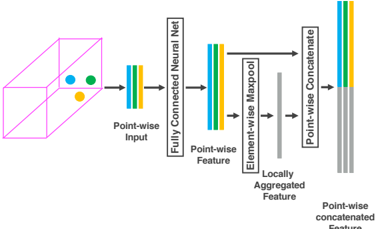
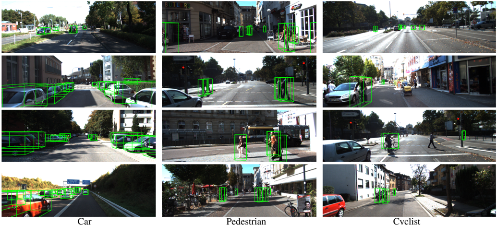

Autores: Yin Zhou, Oncel Tuzel (Apple Inc., CVPR 2018)
arXiv: 1711.06396
Idea central
Pipeline end-to-end de detección 3D sobre nubes de puntos de LiDAR. Reemplaza las features hand-crafted que usaban los detectores previos por una red que aprende la representación volumétrica.
Es el primer paper que une cleanly:
Point set learning (PointNet-style dentro de cada voxel) + Region Proposal Network (RPN convolucional 3D/2D sobre la grilla densificada).
Arquitectura
Tres bloques:
1. Feature Learning Network
- Divide el espacio en voxels equiespaciados.
- Cada voxel no vacío contiene un subconjunto de puntos.
- Se aplica una Voxel Feature Encoding (VFE) layer apilable:
- feature por punto + feature agregada localmente (max-pool) → concat.
- Stacking de VFEs aprende interacciones complejas dentro del voxel.
- Resultado: tensor 4D disperso (sparse), solo en voxels ocupados.
2. Convolutional Middle Layers
- Convoluciones 3D que agregan contexto espacial → tensor denso 3D → bird's-eye view 2D.
3. Region Proposal Network (RPN)
- Convs 2D + heads de clasificación y regresión de bounding boxes 3D.
Resultados (KITTI)
Supera por amplio margen los métodos previos basados solo en LiDAR:
- Coches, peatones, ciclistas — SOTA en bird's-eye view y 3D detection.
- Sin necesidad de imágenes RGB ni features hand-crafted.
Por qué es importante para materiales
Aunque es un paper de driving / detection, su idea de codificar por voxel con un mini-PointNet se traslada directamente a:
- Análisis de defectos en MD (cada voxel = pequeño volumen del sample).
- Pipelines tipo [[voxel_voids_nucleacion_Hemani_2014]] pero con features aprendidas.
- Predicción de propiedades en cristales nanoporosos (ver [[CNN3D_constantes_elasticas_nanoporosos_Zorkaltsev_2025]]).
Conexiones
- Combina filosofías de [[PointNet_Qi_2017]] (set encoding) con CNN 3D volumétricas.
- Conceptualmente precede a sparse convs (MinkowskiNet, etc.) que generalizan VoxelNet.
Figuras del Paper (6)

Figure 1. VoxelNet directly operates on the raw point cloud (no need for feature engineering) and produces the 3D detection results using a single end-to-end trainable network.
Figure 1. VoxelNet directly operates on the raw point cloud (no need for feature engineering) and produces the 3D detection results using a single end-to-end trainable network.

Figure 2. VoxelNet architecture. The feature learning network takes a raw point cloud as input, partitions the space into voxels, and transforms points within each voxel to a vector representation characterizing the shape information. The space is represented as a sparse 4D tensor. The convolutional middle layers processes the 4D tensor to aggregate spatial context. Finally, a RPN generates the 3D detection.
Figure 2. VoxelNet architecture. The feature learning network takes a raw point cloud as input, partitions the space into voxels, and transforms points within each voxel to a vector representation characterizing the shape information. The space is represented as a sparse 4D tensor. The convolutional middle layers processes the 4D tensor to aggregate spatial context. Finally, a RPN generates the 3D detection.

Sin caption
Figura en pagina 3.

Figure 4. Region proposal network architecture.
Figure 4. Region proposal network architecture.

Figure 5. Illustration of efficient implementation.
Figure 5. Illustration of efficient implementation.

Figure 6. Qualitative results. For better visualization 3D boxes detected using LiDAR are projected on to the RGB images.
Figure 6. Qualitative results. For better visualization 3D boxes detected using LiDAR are projected on to the RGB images.